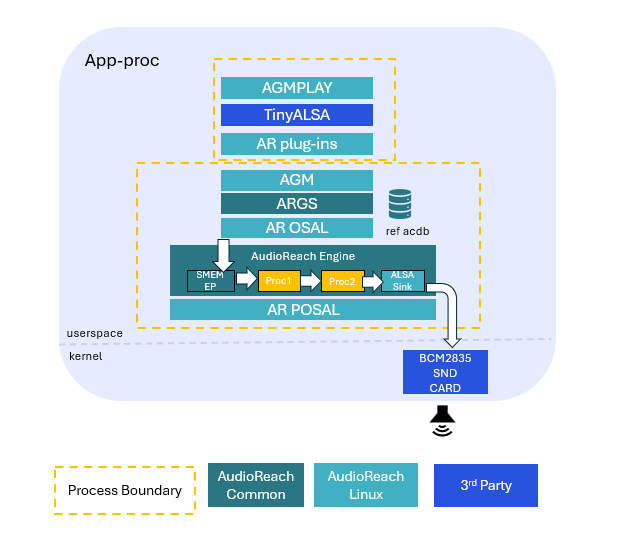
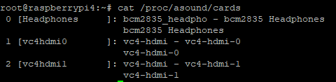
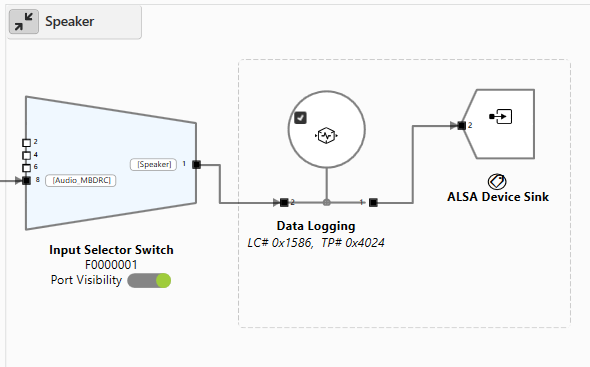
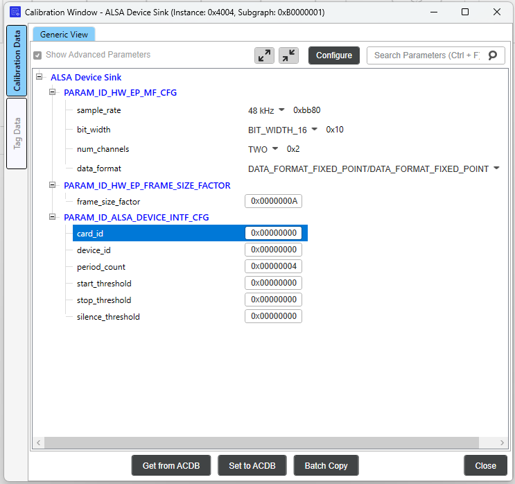

Raspberry Pi 4¶
- 架构概述
- 创建 Yocto 镜像
- 设置 Raspberry Pi
- 运行 AudioReach 用例
- 在 AudioReach 中使用 ALSA lib
- 故障排除
本指南介绍了 Raspberry Pi 平台上的 AudioReach 架构概述，并逐步讲解如何创建一个集成 AudioReach 的 Yocto 镜像、将该镜像加载到 Raspberry Pi4 设备上，然后运行一个 AudioReach 用例。
架构概述¶

上面的架构图展示了在 Raspberry Pi 上使用 AudioReach 的播放用例。在此设置中，agmplay 测试应用被用来播放一段音频片段，声音输出通过扬声器或耳机等输出设备来呈现。
在这里，当 AudioReach 图服务（ARGS）从客户端收到打开图的请求时，ARGS 会使用用例句柄和校准句柄从音频校准数据库（ACDB）中检索音频图和校准数据。然后，它通过通用包路由器（GPR）协议，经由物理或软数据链路，将图定义和相应的校准数据提供给 AudioReach 引擎（ARE）。
在收到数据后，ARE 会根据图定义使用处理模块构建一个音频图。它处理从源端点经管道传送到 ALSA 汇端点的音频数据，随后这些数据通过 BCM2835 声卡呈现。尽管 ARE 允许开发者设计其用例图并支持在异构核心间进行分布式处理，但鉴于 Raspberry Pi 没有 DSP，ARE 在用户空间的 APPS 处理器上运行。
此外，在播放用例期间，可以使用一个名为 AudioReach Creator（ARC，也称为 QACT）的基于 PC 的 GUI 工具实时可视化图拓扑。
创建 Yocto 镜像¶
第一步是将 AudioReach 组件集成到一个可以加载到 Raspberry Pi 设备上的 Yocto 构建中。这涉及同步一个 Yocto 构建，然后集成 meta-audioreach 层，该层目前以 Github 仓库的形式提供。
在按照这些步骤操作之前，先了解如何使用 Yocto 项目的基础知识会有所帮助。为此，请参阅 Yocto 官方文档站点：https://docs.yoctoproject.org/5.0.12/brief-yoctoprojectqs/index.html
步骤 1：创建 Yocto 构建¶
按照以下步骤设置 Yocto 构建：
- 为你的 Yocto 构建创建一个目录，并在此目录内创建另一个名为 “sources” 的目录。
- 在 “sources” 目录中，克隆以下仓库：
git clone git://git.yoctoproject.org/poky -b scarthgap
git clone git://git.yoctoproject.org/meta-raspberrypi -b scarthgap
git clone https://git.openembedded.org/meta-openembedded -b scarthgap
- 返回 Yocto 根目录并运行以下命令来设置构建环境（这将自动创建一些必要的配置文件，以及一个 “build” 目录）：
- 导航到文件 “
/build/conf/local.conf” 并添加以下行： - 导航到 “build/conf/bblayers.conf” 文件，并如下所示编辑该文件以添加必要的 meta 层：
# POKY_BBLAYERS_CONF_VERSION is increased each time build/conf/bblayers.con
# changes incompatibly
POKY_BBLAYERS_CONF_VERSION = "2"
BBPATH = "${TOPDIR}"
BBFILES ?= ""
BBLAYERS ?= " \
<path_to_build>/sources/poky/meta \
<path_to_build>/sources/poky/meta-poky \
<path_to_build>/sources/poky/meta-yocto-bsp \
<path_to_build>/sources/meta-raspberrypi \
<path_to_build>/sources/meta-openembedded/meta-oe \
<path_to_build>/sources/meta-openembedded/meta-multimedia \
<path_to_build>/sources/meta-openembedded/meta-networking \
<path_to_build>/sources/meta-openembedded/meta-python \
"
注意： AudioReach 项目当前使用 Yocto 的 “scarthgap” 版本。请确保 Yocto scarthgap 构建所需的所有实用工具都满足最低版本号，这些版本号列在 Yocto 文档站点上：https://docs.yoctoproject.org/5.0.12/ref-manual/system-requirements.html#required-git-tar-python-make-and-gcc-versions。
如果不满足，请按照上述链接中第 1.5.1 节的步骤来安装和设置 buildtools。
步骤 2：获取 AudioReach Meta 层¶
AudioReach meta 层包含 AudioReach 所需的构建 recipe。将 meta-audioreach 仓库克隆到 “sources” 文件夹中：
现在导航到文件 “
步骤 3：将 AudioReach 添加到系统镜像¶
为确保 AudioReach 系统镜像作为完整 Yocto 构建的一部分被编译，导航到文件 “
IMAGE_INSTALL:append = "audioreach-graphservices tinyalsa audioreach-graphmgr audioreach-engine audioreach-conf"
要启用 ALSA lib 支持，将以下 ALSA 软件包添加到 “local.conf” 文件中：
Raspberry Pi 设备没有 DSP，因此必须改为启用对 APPS 处理器上 ARE（AudioReach 引擎）的支持。为此，将这些额外的行添加到 “local.conf” 文件中：
PACKAGECONFIG:pn-audioreach-graphmgr = "are_on_apps use_default_acdb_path"
PACKAGECONFIG:pn-audioreach-graphservices = "are_on_apps"
步骤 4：编译镜像¶
现在构建设置已经完成，可以生成完整的 Yocto 镜像了。导航到 “build” 目录并运行以下命令来生成镜像：
- 如果 bitbake 命令报出 “umask” 错误，运行命令 umask 022 后再试。
- 如果出现 “restricted license” 错误，导航到 “
/build/conf/local.conf” 文件并追加以下行：
编译成功后，将生成 Yocto 镜像。导航到文件夹 “
步骤 5：烧录 Yocto 镜像¶
生成的 Yocto 镜像可以使用 Raspberry Pi Imager 烧录到 SD 卡。它可以从 raspberrypi.com/software 安装，或者在 Linux 终端上运行 sudo apt install rpi-imager 来安装。然后按照以下步骤烧录设备：
- 打开 Raspberry Pi Imager，如果有 “Choose Device” 选项，选择 “RaspberryPi4” 作为设备类型。
- 在 “Choose OS” 选项下，选择 “Use custom”。确保搜索所有文件类型。然后导航到 “.wic” 文件并选中它。
- 在 “Storage” 下，选择所需的 SD 卡。
- 点击 “Flash” 开始烧录镜像。
烧录完成后，SD 卡将包含 Yocto 镜像。
设置 Raspberry Pi¶
如果尚未完成，请先在 Raspberry Pi 上设置好硬件。为此，请参阅 Raspberry Pi 官方文档页面上的步骤：https://www.raspberrypi.com/documentation/computers/getting-started.html
按照步骤操作，直到 “Install an operating system” 一节。
配置启动设置¶
接下来，请完成以下步骤以启用音频并更新日志设置。如果设备连接了外接显示器，可以直接在 Raspberry Pi 4 界面上更新下述文件，也可以通过本地计算机使用 SCP 更新。
- 注意：用户也可以通过打开到 “root@
” 的连接经由 SSH 连接到 Raspberry Pi。默认情况下，连接 SSH 无需密码。
要启用声卡：
- 导航到文件 “/boot/config.txt”
- 找到行 #dtparam=audio=off
- 将此行改为 dtparam=audio=on
- 更新时务必取消对此行的注释。
可选步骤：在文件 /boot/config.txt 中，如果 Raspberry Pi 将连接到显示器，也可以禁用 HDMI 音频输出。这很有帮助，因为如果 HDMI 声卡被枚举，它可能会更改 Headphones 设备的声卡 ID，这将需要在 ARC 中更新声卡 ID。
- 导航到文件 “/boot/config.txt”
- 找到行 dtoverlay=vc4-kms-v3d
- 将此行改为 dtoverlay=vc4-kms-v3d,noaudio
默认情况下，运行 Raspberry Pi 用例时打印的系统日志会很短。应更新系统日志设置，以捕获 AudioReach 将打印的额外用例日志：
- 导航到文件 “/etc/syslog-startup.conf”
- 取消对行 Rotate size (ROTATESIZE) 和 Rotate Generations (ROTATEGENS) 的注释
- 将 ROTATESIZE 设为 1000000。
- 此 rotate size 字段表示生成新日志文件之前的最大日志文件大小。
- 将 ROTATEGENS 设为 20。
- 这表示可以生成的最大日志文件数量。
- 保存文件。
要应用更新后的配置设置，通过主屏幕关闭 Raspberry Pi，或在终端中运行以下命令：
启用实时校准模式¶
ARC（AudioReach Creator）是一个工具，允许用户执行若干与音频用例相关的功能，包括创建和编辑音频用例图，以及在实时运行音频用例时编辑音频配置。有关 ARC 的更多信息，请参阅 AudioReach Creator 页面。
- 请注意，目前 AudioReach Creator 仅在 Windows 上可用。
以下步骤将演示如何将 ARC 连接到 Raspberry Pi，以便实时查看用例图。
在 Raspberry Pi 上：
- 使用以太网或 Wifi 将 Raspberry Pi 连接到互联网。
- 以太网
- 将以太网线缆插入 Raspberry Pi 的以太网端口。
- Wifi
- 在屏幕右上角点击时间旁边的图标，并选择 “Preferences”。
- 在左侧找到 “Wireless Network” 选项以选择网络。
- 以太网
- 打开终端并运行命令 ifconfig 以查找当前的 IP 地址。
- 在终端上，运行命令 ats_gateway
5558 - 打开另一个终端，运行命令 agm_server
在本地计算机上：
- 使用 安装 ARC 的步骤 在 Windows 主机上安装 ARC（也称为 QACT）。你至少需要 QACT 8.1
- 打开 ARC，点击 “Connection configuration” 选项。
- 通过在 TCP/IP 部分下添加条目
:5558 将 Raspberry Pi 添加为设备 - 刷新 “Available Devices” 列表。Raspberry Pi 的 IP 地址应出现在列表中。
- 如果没有出现，请确保 ats_gateway 和 agm_server 命令仍在运行。
- 选择该条目并点击 connect。
运行 AudioReach 用例¶
完成上述所有设置后，按照以下步骤运行音频用例：
- 将一个 “.wav” 文件推送到 Raspberry Pi 上的某个位置，例如 “/etc” 文件夹。重启系统使更改生效。
- 将外接音频设备（如扬声器或耳机）连接到 Raspberry Pi 的音频端口。
- 打开终端并运行命令 agm_server（如果尚未运行）。
- 打开另一个终端窗口并运行以下命令以启动播放用例：
现在 “.wav” 文件应通过外接音频设备播放。如果 Raspberry Pi 已连接到 ARC，当前用例图将出现在图视图中。该用例的系统日志将保存在文件 “/var/log/messages” 中。
在 AudioReach 中使用 ALSA lib¶
ALSA lib 为 Raspberry Pi 上的音频播放和采集提供了一个替代接口。Yocto 构建中包含的 ALSA lib 软件包提供了可与 AudioReach 一同使用的额外音频实用程序和工具。
有关 ALSA lib 与 AudioReach 集成的详细信息，包括元数据生成、配置和高级用例，请参阅 在 AudioReach 中使用 ALSA lib。
使用 aplay 进行音频播放¶
aplay 是一个 ALSA lib 测试应用，可作为 agmplay 的替代方案用于音频播放。要在 AudioReach 中使用 aplay：
- 确保 agm_server 在某个终端中运行：
- 在另一个终端中，使用 aplay 播放一个音频文件：
注意
参数
agm:100,100对应于 AGM 虚拟声卡配置中定义的CARD=100和DEV=100。声卡 ID100标识 AGM 虚拟声卡（virtualsndcard），设备 ID100指的是PCM100，即该声卡下定义的播放 PCM 设备。对于采集，则会改用设备 ID101（PCM101）。这些 ID 并非由插件本身固定——它们是在虚拟声卡定义文件中定义的，且必须相应匹配。
故障排除¶
如果运行用例时出现一些问题，请参阅下面建议的修复方法：
检查声卡¶
在 Raspberry Pi 终端上，运行以下命令：
这应输出可用的声卡。如果输出反而显示 “no sound cards available”，那么你很可能忘记启用声卡（参见“配置启动设置”一节）。

检查声卡 ID¶
如果 Raspberry Pi 连接到显示器，基于 HDMI 的声卡可能会在文件 “/proc/asound/cards” 中被枚举，从而导致 Headphones 的声卡 ID 发生变化。要解决此问题，你需要在一台辅助计算机上安装 ARC（参见“启用实时校准模式”一节）。
- 将 ACDB 和 workspace 文件从 Raspberry Pi 复制到你的本地计算机。这些文件可以在文件夹 “/etc/acdbdata” 下找到。
- 注意：这可以通过在 Linux 终端上使用 “scp” 命令，或使用诸如 “WinScp” 之类的程序来完成。
- 通过选择 “Open ACDB File on Disk” 选项以离线模式打开 ARC。这将提示你选择一个 workspace 文件。选择从 Raspberry Pi 复制过来的 workspace 文件。
- 在左上角显示用例的下拉菜单中，选择任何使用 “Speaker” 的用例。
- 双击下面所示的 “ALSA Device Sink” 模块

- 这将打开 Configure 窗口。检查这里的 “card_id” 字段。card_id 应与 Raspberry Pi 上 “/proc/asound/cards” 文件中对应 Headphones 条目的 ID 相同。

如果不相同，请更新该值，并点击底部的 “Set to ACDB” 使更改生效。 - 在 ARC 菜单上，点击左上角的 “Save” 以更新 ACDB 文件。
- 将更新后的 ACDB 文件复制回 Raspberry Pi（建议先删除当前位于 “/etc/acdbdata” 文件夹中的文件，以确保更改生效）
- 关闭系统使更改生效。然后，再次尝试运行该用例。
{kind=link}
{kind=link}